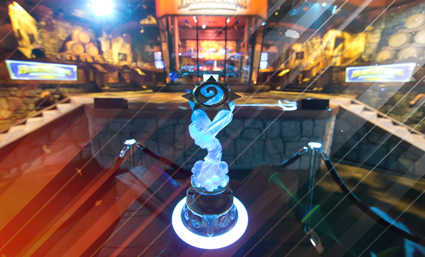

Présentation :
Hearthstone est un jeu de cartes à collectionner en ligne,
développé et édité par la société Blizzard Entertainment.
C'est un jeu gratuit s'inspirant de l'univers de fiction
médiéval-fantastique du jeu vidéo Warcraft développé par Blizzard.
Connaissant un grand succès à sa sortie, le jeu remporte le prix du meilleur
jeu portable lors des Game Awards 20143. À la date de novembre 2018, Blizzard
annonce avoir atteint le cap des 100 millions de joueurs inscrits au jeu.
Après avoir choisi une des 9 classes jouables du jeu, les joueurs utilisent un deck de 30 cartes.
Il peut être composé de deux exemplaires d'une carte simple. En revanche, il contient une seule
unité de carte légendaire. Le deck peut contenir plusieurs cartes légendaires pour autant qu'elles
soient différentes. Il doit être composé à la fois de cartes identiques à toutes les classes et de
cartes spécifiques à la classe choisie.
Au premier tour, les joueurs reçoivent 4 cartes. Ils peuvent modifier certaines d'entre-elles afin
d'éviter d'avoir de grosses cartes impossibles à jouer en début de partie.
Un tirage au sort définit le joueur qui débutera la partie.
La ressource utilisée dans le jeu est le cristal de mana. Il est représenté sur les cartes par la
gemme bleue qui se trouve en haut à gauche de la carte. Il est utilisé pour invoquer les serviteurs,
les sorts et utiliser le pouvoir des héros ainsi que l'équipement.
Vous débutez la partie avec un point de cristal de mana. A chaque tour, vous recevez un point de mana
supplémentaire. Le maximum de cristaux de mana collecté dans le jeu est de 10.
Chaque héros dispose d'une compétence propre qui lui coûte 2 cristaux de mana.
Le héros peut utiliser sa compétence à chaque tour.
Le héros s'accompagne de serviteurs dans la bataille grâce à des cartes serviteurs. Ceux-ci restent
sur le champ de bataille et combattent pour le héros. Ils arrivent endormis sur le plateau de jeu et
commencent à combattre au tour suivant. Le serviteur endormi et ne pouvant combattre est représenté
par un "z" sur le plateau de jeu.
Le serviteur attaque l'adversaire à concurrence du nombre indiqué sur la gemme jaune flanquée d'une
épée en bas à gauche de la carte.
Le serviteur reste sur le plateau de jeu ou retourne dans la main jusqu'à ce qu'il soit détruit par
l'adversaire. Il est détruit une fois que sa vie a atteint zéro ou par certains sorts.
La vie d'une carte est représentée par la gemme rouge en bas à droite.
Le serviteur peut avoir une compétence particulière. Elle est alors représentée par une icône
brillante.
Le serviteur peut avoir un sous-type (bête, dragon, murloc, pirate, démon) qui l'influence.
Le serviteur dispose d'une compétence fréquente et non fréquente. La première n'est pas définie sur
la carte comme Provocation (Taunt), Cri de bataille (Battlecry),.... Elle est donc à connaître. La
seconde est celle spécifiée sur la carte.
Les cartes de sort n'ont pas de valeur d'attaque ou de vie. Elles sont jouées une seule fois et
ensuite, elles sont perdues.
Les cartes d'arme/équipement ont une valeur d'attaque et de vie. Le héros utilise des cristaux de
mana pour pouvoir porter cet équipement.
Quand le héros porte un équipement, la carte de celui-ci perd un point de durabilité à chaque fois
que le héros frappe.
Il existe une différence entre les cartes portant une gemme en leur centre et les autres. Ces
dernières sont des cartes basiques. Les autres sont des cartes plus précieuses. La couleur de la
gemme indique la rareté de la carte.
Le fond de la carte de sort détermine la classe à laquelle elle appartient. Ainsi : pourpre est
pour le Démoniste, le bleu-vert pour le Mage, le bleu pour le Chaman, le noir pour le Voleur, le brun foncé pour le Guerrier, le brun clair pour le Druide, le blanc pour le Prêtre, le vert pour le Chasseur et le rose pour le Paladin. Le fond de couleur gris indique que la carte n'est dédiée à aucune classe.
Compétitions :

HCT (Hearthstone Championship Tour) : championnat du monde annuel,
avec la finale à la BlizzCon en janvier de l'année suivante (depuis 2017
; auparavant, en novembre de la même année) qui regroupe les joueurs du monde
entier. Il faut se qualifier avec un système de points obtenus via le ladder
et certains tournois en ligne et hors-ligne ; les 64 meilleurs joueurs de
chaque région peuvent alors participer aux phases finales saisonnières
régionales (hiver, printemps, été). La phase finale mondiale regroupe alors
16 joueurs.
HGG (Hearthstone Global Games) : tournoi communautaire qui regroupe 48 pays.
Le meilleur joueur de chaque pays au classement par points est capitaine d'équipe,
puis tous les joueurs peuvent voter pour trois autres joueurs. Le format est classique,
avec une phase de poules puis des éliminations directes.